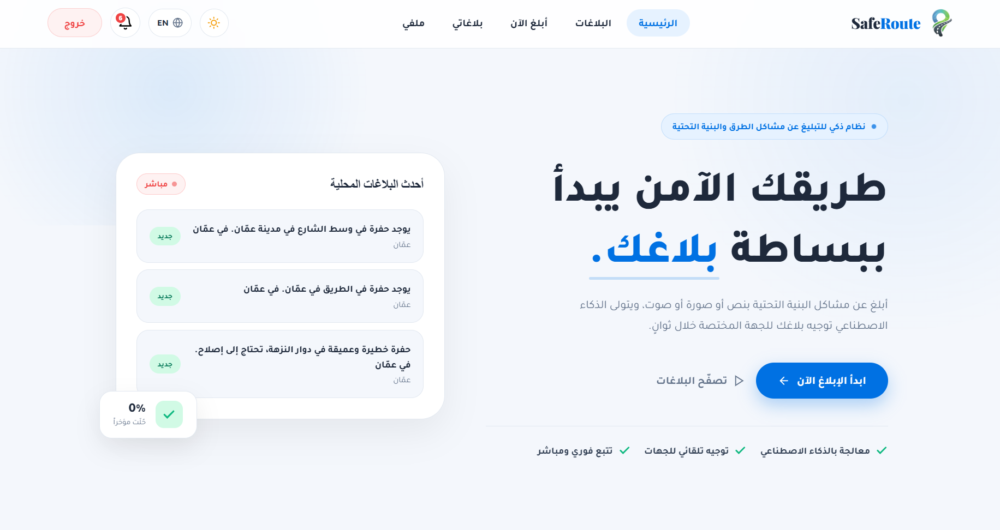

FULL-STACK DEVELOPMENT · 2026REACT / ASP.NET CORE WEB API / SQL SERVER
SafeRoute.
A smart road-hazard and urban incident reporting platform. Citizens submit location-aware reports with media; responsible sectors track assignments, handle the workflow and communicate status updates.
Full-stackAI-assistedRole-based
Explore SafeRoute case study